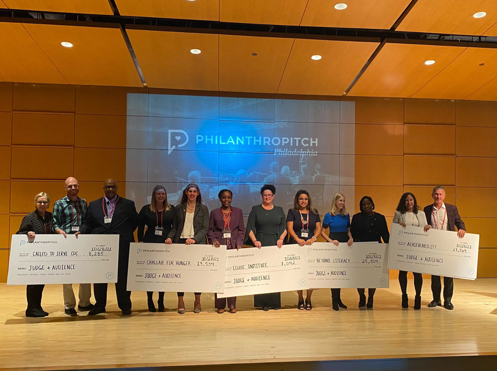

Called to Serve CDC
Called to Serve CDC is a socio-economic community development entity dedicated to the complete renewal restoration and revitalization of underserved neighborhoods in Philadelphia. In 2021, they were finalists in Philanthropitch Philadelphia, a city-wide competition to raise funds among Philadelphia's top nonprofits.
Due to Philanthropitch Philadelphia using city-wide nonprofits, the target audience to capture votes for the competition were community leaders and elected officials directly in the communities Called to Serve impacts. Media kits were sent to community leaders (i.e. block captains, micro-influencers) and elected officials (i.e. councilmembers, state representatives). These media kits saw an 85% success rate, with posts being made by the likes of Councilwoman Cindy Bass and several block captains. CTS social media channels also used created posts, which saw an all-time high engagement.
Social media engagement saw an increase of 3,054%, an all-time high and CTS received $10k+ from Philanthropitch Philadelphia.
